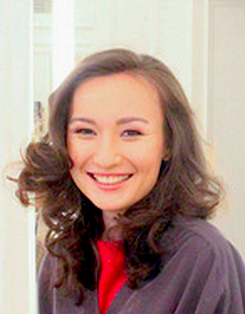
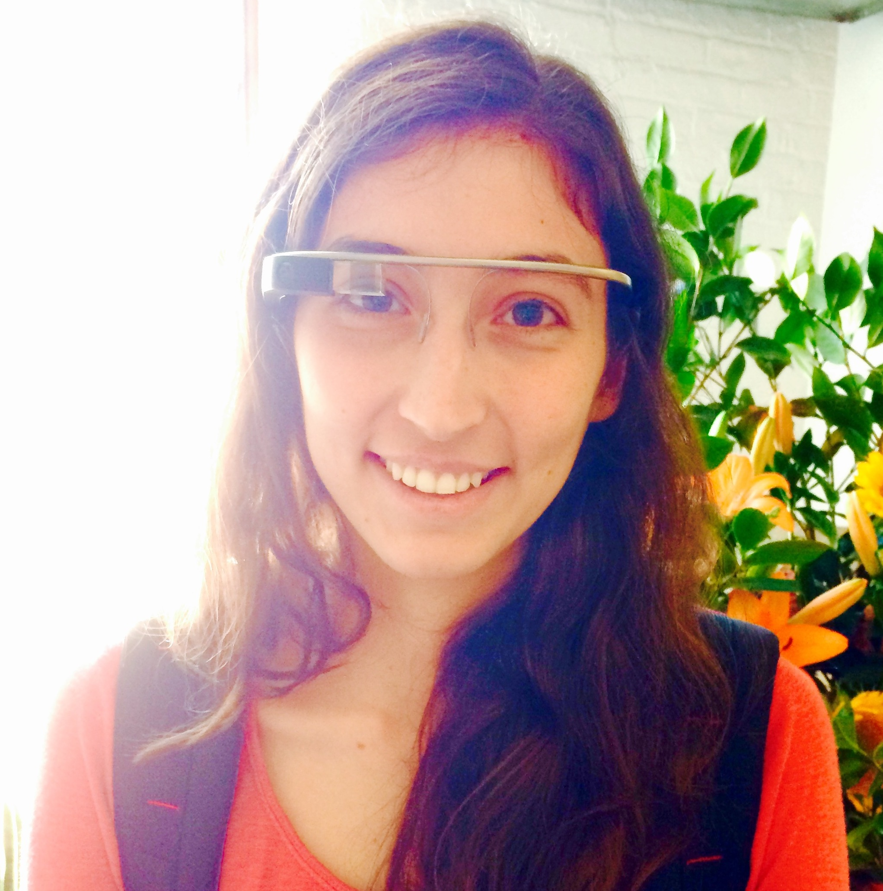
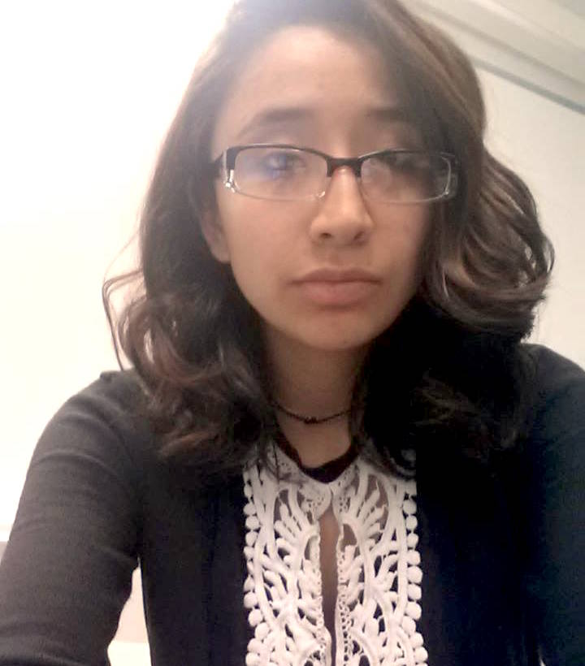
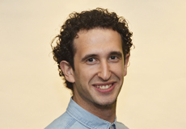

|

After I moved to New York City from Kazakhstan, I wanted to go back to school. I was grateful that LaGuardia was willing to accept me when every other school turned me down. However, LaGuardia did not just accept me - it gave a chance to develop myself intellectually and professionally. In the very first semester, I met professors who encouraged me to create my own path. I wanted a debate club and with their support, I established “Political Arena” where I presided for a year. Same professors brought to my attention a program called “President’s Society”, where our mentors and professors trained us to be the ambassadors for the college. There I have met many wonderful students, who became my good friends and most importantly my support system. Overtime, lessons learned at the President’s Society became opportunities and boosted my confidence significantly. Today, I am a very proud to be a LaGuardian. I am about to graduate with a Journalism degree. I am currently interning at Senator Kirsten Gillibrand’s office as liaison at the Military Affairs department. In addition, I am a New York Needs You Fellow and a member of a Fellows Leadership Council for it – that is a professional development program where we explore opportunities and various careers. LaGuardia did not just open its doors for me; it also gave me an opportunity to explore other prestigious colleges. For example, this summer I spent five weeks living in a first college in the US that was open for women – Vassar College, where I studied in rigorous and challenging classes while exploring whether I can and like living in the dorm environment. Thankfully, to LaGuardia, I know that I want to study in a liberal arts college and I am confident I will be accepted to one upon my graduation. |

My fascination with technology began in my early childhood. After seeing a futuristic watch with incredible capacities in anime, Sailor Moon, I realized that I wanted to be an engineer. When I came to New York City, I realized that this was the place where I could make my dreams come true. I enrolled at LaGuardia Community College and became a member of the Computer Science club. It was the first step that introduced me to the world of technology. At LaGuardia, I have grown magnificently in my academics. LaGuardia Community College gave me a lot of opportunities to develop my personal, professional and networking skills. I received the Foundation Scholarship twice, was awarded Women in STEM and MAA Maxima Tensor-Summa grants, and became a President’s Society ambassador. The President’s Society gave me a great opportunity to make a contribution to my college and helped me to build a strong foundation of practical skills. With the faculty’s support I became the first female at LaGuardia who completed an undergraduate research in mathematics, and wrote a paper that was accepted by peer-reviewed journal. When I took my first class in programming, I had no previous experience. At LaGuardia, I was able to build strong fundamentals and was able to learn other programming languages on my own. I was very excited to apply my new programming skills. Thus, I developed web surveys and report pages for Math, Engineering, and Computer Science Department to minimize the use of paper and simplify the data analysis. Moreover, I participated in the development of the first LaGuardia application with Phi Theta Kappa. My goal is to earn a master’s degree in Computer Science and become a web/software developer. I am determined to be a female entrepreneur and found my own startup to inspire other women and children to pursue their careers in math and science. |
|

My uncle had an implantable cardioverter-defibrillator placed in his chest. It helped control the arrhythmias that severely threatened his health and, even as a child, I was amazed to see how this machine helped him to lead a normal life. My young dreams became wrapped around a desire to learn about the engineering and technologies that could perform such miracles. Arriving in tech savvy New York City as a wide-eyed seventeen year old, I came to learn so much more about the science behind these cutting-edge, high tech innovations. By constantly joining workshops, meetups and tech-talks provided by top people in the industry, I was introduced to such magical terms as artificial intelligence, nanotechnology and phone applications. I was happily led on the path toward a major in computer science. LaGuardia Community College has helped and supported me greatly giving me the opportunity to grow. As I went through my classes, I spent long hours seeking solutions to a variety of programming problems and algorithms. One of the most exciting projects consisted of analyzing stock market trends to predict their future values. I also designed, developed and evaluated web surveys and a report page for the Math, Engineering and Computer Science Department that made it easier for the professors to the analyze data and reduce paper waste. Involvement in the Phi Theta Kappa College Project in which I helped develop the first ever LaGuardia Application. I have had the privilege to give back to my fellow LaGuardians through volunteering at Student Giving Day for three semesters persuading students, faculty and staff into donating funds for LaGuardia student scholarships. Also got to give back to the community by volunteering for the Coffeehouse Fundraiser for Hurricane Sandy Recovery Efforts, via the LaGuardia Honors program. I currently serve as an ambassador for LaGuardia’s President’s Society program in the role of a liaison for civic leaders and donors. I see a Masters degree in my future. My career aim is to become a software engineer and later on an entrepreneur and found my own startup as my focus and direction helps pave the way for the privilege of one day giving back to the community that has provided me with so much. |

LaGuardia has been an institution where I have been able to build my confidence and have had different opportunities needed in order to accomplish my ultimate goal of running or working for an institution that provides relief for people in need. I decided to start my journey by obtaining a degree in Electrical Engineering in order to establish my family and myself. With the scientific background I will be able to focus on the improvements of other people’s lives. Due to my past immigration status, I was ineligible to enroll in most schools since they required a proof of citizenship or residency. In some institutions this also made me ineligible for in-state tuition. In addition to this, I did not qualify for financial aid. I did not have many options that would fit my needs. LaGuardia Community College gave me options I could not find anywhere else. I was able to attend college despite my immigration status and to qualify for in-state tuition, which was very affordable in comparison to many other schools. This meant that I would be able to work and pay for my tuition. Recently I participated in a summer research. I had the opportunity to work with Matlab, participate in the science symposium at City College and give weekly presentations. This opportunity has helped me build my confidence and has introduced me to many engineering software. I was skeptical about the treatment I would receive as a female student in a male dominated field. But at LaGuardia I have found many students who are willing to help each other in a variety of assignments. Some of the professors at LaGuardia are extremely helpful and take the time to discuss any problem in and out of class. Their attitudes are kind and warmhearted. LaGuardia also offers API tutors for some beginner level classes, which can be extremely helpful. Like the professors, tutors are willing to help above and beyond what is required from them. Overall the environment has been very comforting and beneficial to my academic, social growth and motivation. I will graduate next semester, and this makes me the first in my family to attend and graduate from college. Therefore, it gives me better opportunities to establish my career. All of the great benefits I have had so far would not have been available to me if it weren’t for LaGuardia Community College. At LaGuardia, I learned to build confidence in myself and in my dreams. I will carry my experience that I gained at LaGuardia to a four year college and the workforce. |
|
 In December 2010, I began my journey towards a brighter future in the land of opportunity. When I arrived in New York, I was 18 years old, had little money and no people to reach out to in the U.S. Even more worthy of note, I did not speak a word of English. One of my first goals was to learn English as quickly as possible. As planned, I attended an intensive English program at The English Language Center (TELC). Within a year and a half I became fluent in English and was ready to start my academic career at LaGuardia Community College while working multiple part-time jobs. As a LaGuardia student, my communication and interpersonal skills continued to improve, especially when I became a volunteer English tutor at TELC. By working with students from many different countries, I developed methods to communicate effectively with people. Through my hard work and perseverance, I earned a place on the Dean’s list for both the spring 2013 and fall 2014 semesters. During my tenure at LaGuardia, I have been active in the school community. I was chosen to be the Chairman of the Student Advisory Council (SAC) Executive Board, where I conducted all student club meetings. As a result of my performance in the SAC, I received a student leadership award from City University of New York (CUNY) at the 2014 Annual Vice Chancellor's Excellence in Leadership Award Ceremony. I was an ambassador for the President’s Society, a student leadership program, where I represented the LaGuardia student body by joining the college's President, Dr. Gail Mellow, in meetings with local businesses and community leaders. I represented LaGuardia along with President Mellow on a visit to New York State lawmakers in Albany. I was part of a student fundraising group, which was responsible for outreach to local businesses for the LaGuardia One Million Dollar Challenge Grant program this year. One of my most exciting activities was participating in the "First in The World”' grant award ceremony, a grant awarded to LaGuardia Community College by The Obama Administration. I was selected by President Mellow to be the student guide for the Under Secretary of the U.S. Department of Education, Ted Mitchell. It was an honor to show Under Secretary Mitchell the LaGuardia Community College campus.Upon my graduation from LaGuardia, I will be the first member of my family to have a college degree. I am about to achieve the first step of my educational goal by attaining my Associates Degree in Science & Business Administration and Management in December 2014. As I look to my future, I want to achieve my dream of becoming a commercial airline pilot as well as a business executive in the airline industry. I know I can achieve this goal by attending a 4 year institution where I will embrace the opportunity for a stellar education both on the ground and in the sky. |

Wai Kat Lam has come a long way since she journeyed from China to the United States when she was 18-years old. “I wanted a change of environment that would bring me opportunity,” says Kat about pursuing a higher education. The Biology Major, Honors student and recognized award-winner finally found what she was searching for at LaGuardia Community College. “My mom wanted me to have a different life than her, so she encouraged me to go to college,” Kat shares about her mother whose elementary-level education limited her options, especially in trying to find a job to support her family. Heeding her mother’s advice, the ambitious scholar immediately took advantage of the College’s resources and immersed herself in HSAC—the student-run collective that coordinates peer-led transfer and scholarship events and projects that promote student research and civic engagement. The support from her peers and community motivated Kat to reach even higher: she was elected as HSAC’s executive officer. Kat’s dedication to her research on the effects of alcohol on the courtship, mating choices and fertility of fruit flies won her first place at the National Collegiate Honors Council for the 2013 Student Poster Presentation in Natural Sciences and Mathematics. She is also a research intern at Memorial Sloan Kettering Cancer Center. Carrying a 3.9 GPA, Kat is also a member of the Phi Theta Kappa Honor Society, and has won two $1000 LaGuardia Foundation scholarships: LaGuardia Community College Merit Scholarship for STEM Majors and the Mary and David Soloman Scholarship. Kat is successfully transferred to John Hopkins University where she is pursuing her dream of becoming a physician to research cancer vaccines. |